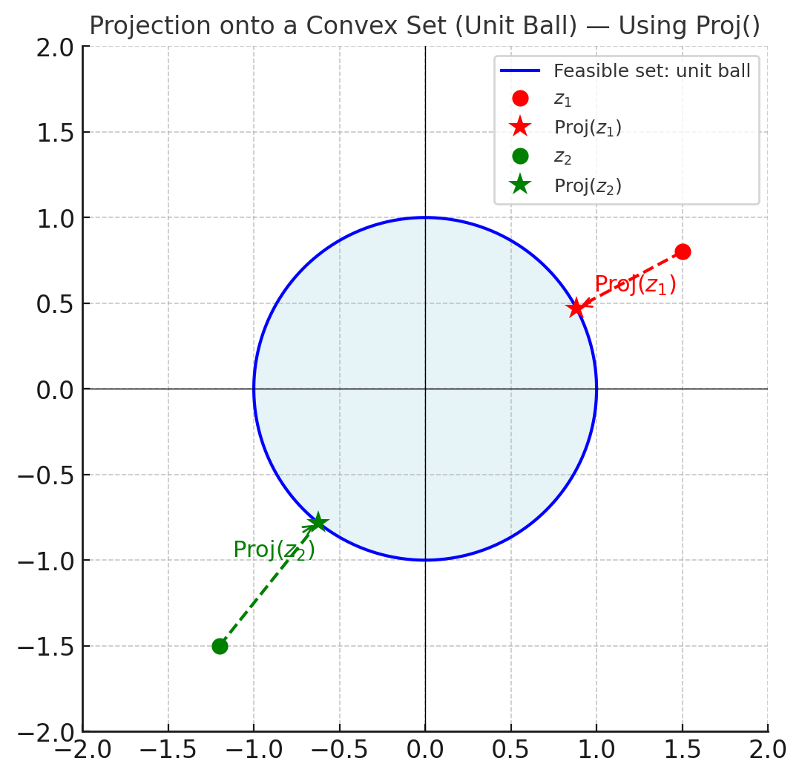

2.3. Constrained Optimization#
So far, we have focused on unconstrained problems, where the optimization variable can take any value in \(\RR^d\). In constrained optimization, the variable must satisfy certain restrictions. Constrained optimization is arguably more widely used in classical applications of optimization, such as resource allocation problems, economics, transportation, signal processing etc. However, it appears that, in machine learning and deep learning, and especially in training foundation models, it is not often used (at least not used directly). This is due to many factors, for example constrained optimization problems are typically much harder to solve than unconstrained ones, therefore one tends to reformulate them as certain types of unconstrained but regularized problems. Nevertheless, many concepts in constrained optimization are still critical for our subsequent studies for algorithms for training foundation models.
Definition 2.5 (Constrained Optimization Problem)
A general constrained optimization problem can be written as:
where:
\(f:\RR^d \to \RR\) is the objective function.
\(g_i:\RR^d \to \RR\) are inequality constraint functions.
\(h_j: \RR^d \to \RR\) are equality constraint functions.
For a constrained problem, we call the feasible set as the set of solutions that satisfies all the constraints:
A point \(\vw\) is feasible if \(\vw \in \mathcal{F}\). The optimization problem seeks the feasible point with the smallest objective value.
2.3.1. First-Order Necessary Condition#
Clearly, a key difference between the unconstrained and constrained problem is that, for the former, the optimal solution always satisfies \(\nabla f(\vw) =0\) (i.e., first-order necessary condition); however for the latter, the optimal solution may occur at the boundary of the feasible set \(\mathcal{F}\), in which case the gradient is not necessarily zero. Clealry, we now need a different set of conditions to characterize (global/local) optimal solutions. Towards this end, let us first define the notation of a feasible direction.
Definition 2.6 (Feasible Direction)
Let \(\vw \in \mathcal{F}\). A vector \(\vd\) is a feasible direction at \(\vw\) if there exists \(\epsilon > 0\) such that \(\vw + \alpha \vd \in \mathcal{F}\) for all \(\alpha \in [0,\epsilon]\).
f \(\vw^*\) is a local minimizer of a constrained problem and the feasible set is smooth near \(\vw^*\), then:
\(\nabla f(\vw^*)^\top \vd \ge 0\) for all feasible directions \(\vd\) at \(\vw^*\).
This is the first-order necessary condition in constrained optimization — it generalizes the unconstrained condition \(\nabla f(\vw^*)=0\) to account for constraints.
Theorem 2.9 (First-Order Necessary Condition for Constrained Optimization problem Problem)
Let \(f:\RR^d\to\RR\) be continuously differentiable and let \(\mathcal F\subseteq\RR^d\) be a convex feasible set. If \(\vw^*\in\mathcal F\) is a local minimizer of
(a) For every \(\vv\in\mathcal F\), the following holds:
That is, \(\nabla f(\vw^*)\) has no negative component along any feasible direction at \(\vw^*\).
(b) Further, if \(f\) is convex, then (2.3) is also suffient for global optimality.
Proof. (a) Necessity. Since \(\vw^*\) is a local minimizer, there exists \(\epsilon>0\) such that
Take any \(\vv\in\mathcal F\) and define the direction
Because \(\mathcal F\) is convex, for any \(\alpha\in[0,1]\) the point \(\vw^*+\alpha\vd\) is also in \(\mathcal F\).
For \(\alpha>0\) small enough, \(\vw^*+\alpha\vd\) is feasible and within the \(\epsilon\)-ball, so
Dividing both sides by \(\alpha>0\) and subtracting \(f(\vw^*)\), we get
Taking the limit as \(\alpha\to 0^+\) and using differentiability,
Since \(\vd = \vv - \vw^*\) was arbitrary (for \(\vv\in\mathcal F\)), the result follows.
(b) Sufficiency (when \(f\) is convex). For convex and differentiable \(f\), the first-order convexity inequality holds (cf. (2.1)):
By the assumed inequality \(\langle \nabla f(\vw^*),\, \vv-\vw^*\rangle \ge 0\) for all \(\vv\in\mathcal F\), we obtain
so \(\vw^*\) minimizes \(f\) over \(\mathcal F\).
At this point, the optimality condition stated in Theorem 2.9 may still be abstract. Let us go over a few examples and see how this condition can be used in practice.
Example 2.6 (Convex problem with Nonnegative Constraints)
Consider the following porblem:
Note that the gradient can be calculated as \(\nabla f(\vw) = (e^{w_1},\ 2w_2)^\top\). Let us ‘guess’ that \(\vw^*=(0,0)^\top\) and we can check if \(\langle \nabla f(\vw^*),\ \vv-\vw^*\rangle \ge 0\) for all \(\vv\ge 0\). Indeed, we have:
Therefore, by Theorem 2.9 (b) and convexity of \(f\), \(\vw^*\) is the global minimizer.
Example 2.7 (Simple Box-Constrained Minimization)
Consider the following problem
Note that the feasible set is \(\mathcal{F} = [0,1]\), which is convex. Also \(f'(w) = 2(w - 0.3)\).
From Theorem 2.9 (a), if \(w^*\) is optimal:
Let’s condition the following two cases:
If \(0 < w^* < 1\), we can choose \(v\) slightly above and below \(x^*\), which forces \(f'(w^*)=0\). This gives \(w^* = 0.3\), and this is a feasible solution.
If \(w^* = 0\), the condition requires \(f'(0) \cdot (v - 0) \ge 0\) for all \(v\in[0,1]\). Here \(f'(0) = -0.6\), so for \(v > 0\) the product is negative — so \(w^* = 0\) cannot be optimal.
If \(w^* = 1\), \(f'(1) = 1.4 > 0\) and \((v - 1) \le 0\), so the product is \(\le 0\) — also violates the \(\ge 0\) condition for some \(v\).
The only point satisfying the first-order condition is \(x^* = 0.3\). In addition, since \(f\) is convex, this is the global minimizer.
Example 2.8 (Equality-Constrained Quadratic Problem)
Consider the problem:
First let us know that the feasible set is given by \(\mathcal{F} = \{\vw\in\RR^2 \mid w_1+w_2=1\}\), which is a straight line in \(\RR^2\). Further, the gradient of \(f\) is given by \(\nabla f(\vw) = \vw\).
From Theorem 2.9 (a), if \(\vw^*\) is optimal then the following holds:
Substituting \(\nabla f(\vw^*) = \vw^*\), we have:
Then let’s understand how this condition will help us find out the optimal solution. Towards this end, we need to be able to describe how we can graduatelly change \(\vx\) in the feasible region and understand what the optimality condition will imply.
Let us define the tangent space to the constraint at \(\vw^*\) as:
If we choose \(\vx = \vw^* + \alpha \vd\) with \(\vd \in T\) and \(\alpha\) small, \(\vx\) remains feasible in \(\mathcal{F}\).
Then for such a choice of \(\vx\), the optimalaity condition becomes condition becomes:
These can only hold for small \(\alpha\) if:
The only vectors orthogonal to all tangent directions \(\vd \in T\) are those parallel to the normal vector \(\mathbf{1}=(1,1)^\top\).
Thus:
for some scalar \(\lambda\). To determine \(\lambda\), use the feasibility condition \(\mathbf{1}^\top \vw^* = 1\):
Therefore we obtain \(\vw^* = \tfrac12(1,1)^\top\)
2.3.2. Projection onto Convex Sets#
When solving constrained optimization problems, many algorithms take a step that may leave the feasible set. To restore feasibility, a natural operation is to project the current iterate back onto the feasible set.
Intuitively, the `projection’ is the point in the feasible set that is closest (in Euclidean distance) to a given external point. Formally, the projection operation can be defined as follows:
Definition 2.7 (Euclidean Projection)
Let \(\mathcal{F} \subseteq \RR^d\) be a nonempty, closed, convex set.
The Euclidean projection of a point \(z\in\RR^d\) onto \(\mathcal{F}\) is defined as:
For convex \(\mathcal{F}\), the minimizer exists and is unique.
Geometrically, the projection operator \({\rm Proj}_{\mathcal{F}}(z)\) is the unique point in \(\mathcal{F}\) such that the vector \(z - {\rm Proj}_{\mathcal{F}}(z)\) is orthogonal to the feasible set at the projection point. In other words, the error vector points directly outward from \(\mathcal{F}\) along the shortest path to \(z\). Please see Fig. xxxx for an illustration.
Below we provide an important theorem describing the property of the projection operator.
Theorem 2.10 (Optimality of the Projection Operator)
Let \(\mathcal{F}\) be nonempty, closed, and convex, and let \(p = {\rm Proj}_{\mathcal{F}}(z)\). Then the following holds:
Conversely, if \(p \in \mathcal{F}\) satisfies the above inequality, then \(p = {\rm Proj}_{\mathcal{F}}(z)\).
Proof. This is simply the first-order optimality condition for minimizing the convex differentiable function \(\frac12\|x-z\|^2\) over the convex set \(\mathcal{F}\).
Its gradient is \(x-z\), so the constrained first-order condition (Theorem Theorem 2.9 (a)) reads:
Multiplying by \(-1\) gives the stated inequality.
Please see the following figure for an illustration of the idea of projection

Fig. 2.1 Projection of two points \(z_1, z_2\) onto the convex unit ball.
The projection points \(\Pi(z_1)\) and \(\Pi(z_2)\) lie on the boundary along the shortest paths.#
A key property of the projection operator is its non-expansiveness.
Property 2.2 (Nonexpansiveness of the gradient operator)
Let \({\rm Proj}(\cdot)\) be the projection operator defined in Definition Definition 2.7. Then for all \(z,y\in\RR^d\):
Proof. Let \(p={\rm Proj}_{\mathcal{F}}(z)\) and \(q={\rm Proj}_{\mathcal{F}}(y)\).
By the projection optimality condition (Theorem Theorem 2.10),
Apply the first with \(x=q\) and the second with \(x=p\):
Add the two inequalities and use \(p-q=-(q-p)\):
Rearrange:
where the last inequality is due to Cauchy–Schwarz. If \(p\ne q\) then we can divide both sides by \(\|p-q\|\) to get
If \(p = q\) the result is trivial.
This proves \({\rm Proj}_{\mathcal{F}}\) is \(1\)‑Lipschitz (nonexpansive).
Property 2.3 (Fixed point solutions)
Let \({\rm Proj}(\cdot)\) be the projection operator defined in Definition Definition 2.7. Let \(w^*\) denote the global optimal solution of the constrained problem (2.3). Then the following holds:
This result is easy to pove, simply by utilizing the optimality condition of the projection operator, as well as the optimality condition for a constrained optimization problem (2.3). Moreover, consider the special case where \(\mathcal{F} \equiv \mathbb{R}^d\) is the entire space. Then the problem becomes unconstrained, and we obtain
This is the first-order necessary condition for an unconstrained optimization problem.
Exercises on the Properties of Projection
Let \(\mathcal{F}\) be a closed convex set in \(\RR^d\) and \(\Proj_{\mathcal{F}}(\vz)\) be the projection of \(\vz\) onto \(\mathcal{F}\).
(a) Show the following optimality condition for projection holds:
(b) Consider the projected gradient update
and assume \(f\) is differentiable and convex. Use the result from (a) to show that:
2.3.3. Feasible Descent Method#
When solving constrained optimization problems of the form:
where \(\mathcal{F}\subseteq \RR^d \) is a closed, convex set and \(f(\cdot)\) is continuously differentiable, we are no longer free to move in arbitrary directions. Instead, we must ensure that each update step stays within the feasible set. This motivates the use of feasible direction methods.
First, let us define the notion of a feasible direction.
Definition 2.8 (Feasible Descent Direction)
A vector \(\vd \in \RR^d \setminus \{0\} \) is a feasible direction at point \( \vw \in \mathcal{F} \) if there exists \( \alpha > 0 \) such that:
If, in addition, the following holds:
then \(\mathbf{d}\) is called a feasible descent direction, as it maintains feasibility and decreases the objective locally at the same time.
Note that for convex sets \(\mathcal{F}\), the feasible directions at the point \(\vw \in \mathcal{F}\) are simply the vectors \(\vd = \vz - \vw, \; \forall~\vz\in\mathcal{F}\). It is important to emphasize that, having a direction that is feasible is the minimum requirement to develop a working algorithm for constrained optimization, and typically the ``descent” property is needed to reduce the objective function. Later in the text, we will identify a few different ways to find such a feasible descent directions.
For now, let us ssume that we have a feasible descent direction \(\vd\) to work with, then an inuitive algorithm is the following Feasible Direction Algorithm.
where \(\vw^{r}, \vw^{r+1}\) are the iterates, \(\vd^r\) is the feasible direction defined above, and \(\{\alpha_r\}_{r=0}^{\infty}\) is a sequence of stepsizes, which ensures feasiblility, that is \(\vw^{r+1} := \vw^r + \alpha_r\vd^r \in \mathcal{F}\)
2.3.3.1. Step Size Strategies#
To guarantee convergence and sufficient decrease, we choose \(\alpha_k\) using one of the following strategies:
Exact line search:
\[ \alpha_k = \arg\min_{\alpha \in [0, 1]} f(\mathbf{w}^r + \alpha \mathbf{d}^r) \]Backtracking line search (Armijo rule):
Start with \(\alpha = 1\) and decrease by \(\alpha \leftarrow \beta \alpha\) (with \(\beta \in (0, 1)\)) until:\[ f(\mathbf{w}^r + \alpha \mathbf{d}^r) \le f(\mathbf{w}^r) + \sigma \alpha \nabla f(\mathbf{w}^r)^\top \mathbf{d}^r, \]for some \(\sigma \in (0, 0.5)\).
Constant Stepsize: Step \(\alpha_r = 1,\; \forall~r\), a bit special, will discuss more shortly.
2.3.4. Projected Gradient Method#
Recall that we want to solve the following problem
where \(f:\RR^d\to\RR\) is differentiable and \(\mathcal F\subseteq\RR^d\) is nonempty, closed, and convex.
One special case of the feasible descent algorithm is the following projected gradient algorithm, which combines gradient descent with the projection operator. The simplest version of such combination is as follows: take a gradient step as if there were no constraints, and then project the resulting point back onto the feasible set. For specifically, given stepsize \(s_r > 0\), the projected gradient (PG) method can be written below:
The convergence behavior of the gradient projection algorithm is relatively straightforward. It can be readily adapted from the results from Section Gradient Methods. In particular, we have the following corollary to Theorem 2.6. One key difference is that the gradient size \(\|\nabla f(\vw)\|^2\) no longer goes to zero, therefore it cannot serve as the optimality condition. Towards this end, we need to design an alternative quanity to measure (first-order) optimality.
Towards this end, recall from Property 2.3 that an optimal solution \(\vw^*\) of (2.2) should satisfy
This above relation is equivalent to:
Therefore, we can use the size of the gap function, defined as
as a measure of (first-order) stationarity, for any fixed \(\alpha >0\).
Corollary 2.1 (Convergence of Projected Gradient Method (Smooth Case))
Under the Lipschitz smoothness assumption Assumption 2.1 and suppose that the step size satisfies \(s_k \leq 1/L\). For any \(K \geq 1\), the following holds:
Proof (Projected Gradient Method for Smooth Objective Function)
The proof the similar steps as Theorem 2.6. We will highlight the key difference in the arguments below.
First, we again begin by observing that under Assumption 2.1, it holds for any \(k \geq 0\) that,
Now recall from (2.4) that the folloiwng holds
Next, we need to relate \(\|\vw^{k+1}-\vw^k\|^2\) with the size of gap function.
Note that from the update of the gradient descent, we observe
Then the rest is the same as the proof in Theorem 2.6. By noting that and \(\alpha \leq 1/L\), we have
This implies
Summing both sides from \(k=0\) to \(k=K-1\) yields
This simplies that